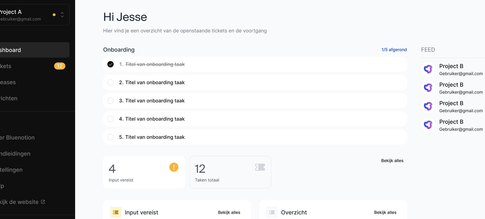

Vragen
UX Vragen
-
[x] Niet besproken met Jesse maar: Voor zo ver ik begrijp werken jullie niet met strikte sprints maar wel met vooraf vastgestelde scopes. Hier komt nog niets van terug in het PMP. Zouden taken/aanvragen gegroepeerd moeten worden in scopes/groepen functionaliteiten of is dit niet nodig?
-
A: Voorlopig niet, zou mooi zijn in de toekomst periode aan taken te kunnen hangen.
-
[x] Documentatie klankomgeving: heeft een knop voor het toevoegen van een nieuw document. Ik was onder de veronderstelling dat de documentatie waar het hier over ging instructies zijn die van Bluenotion af komen en voor de klant zijn. Moeten wij niet de documenten uploaden?
-
A: BN upload de documenten
-
[x] Is het interessant om op de tickets pagina, klant pagina of klant project pagina een overzicht te hebben van de tickets die in die context input nodig hebben van de klant of ons? Op het moment staat er 1x input vereist, mij is het onduidelijk of de Bluenotion medewerker deze input moet leveren of de klant
-
[x] Voor Jesse: Toewijzen van assignees in productive of pop
-
A: Productive
-
[ ] Wat mij betreft mogen de taak detail view en de schermen gebruikt voor het terugkoppelen en goedkeuren van taken gecombineerd worden tot één scherm. Volgens mij zou het ook mogelijk moeten zijn om nadat een taak is “geaccepteerd” aan te geven dat er extra informatie nodig is van de klant.
03-07-2024 Poging tot dashboard verwoorden: Het Dashboard en de Klant > Projecten pagina vervullen in mijn ogen redelijk de zelfde functie.
Ik zou zeggen dat je dashboard een overzicht heeft van alle projecten die een klant heeft draaien met de volgende data
- Totaal taken waar input nodig is van de klant
- Totaal taken waar input nodig is van BN
- Totaal “open/actieve” taken
- Totaal Gesloten taken*
- Per project taken waar input nodig is van de klant
- Per project taken waar input nodig is van BN
- Per project “open/actieve” taken
- Per project Gesloten taken*
*Willen we een opsomming van alle “gesloten” taken of is dit een lijst van taken die in staging staan en zodra de opdrachtgever ze goedkeurt verdwijnen ze uit “gesloten”? E.g. willen we een archief van alle oud taken of enkel relevante informatie tonen?
Het verschil tussen een aanvraag en een taak. Is een klant geïnteresseerd in de verschillende mijlpaal taken?
- [ ] Verschillende lijsten in het PMP paginatie geven?
Functionele vragen
- [x] Op het moment worden per project verschillende structuren gebruikt qua borden. Dient deze structuur overgenomen te worden per project of zou hier een “versimpelde” structuur getoond moeten worden met bijvoorbeeld alleen todo, doing done of task status open/closed? (productive.io workflows?)
- A: Ja versimpeld. Bijvoorbeeld: Open, closed, waiting for feedback customer.
- [x] Schieten klanten direct taken in op de backlog of is er wens naar een soort “staging” waar de klant een taak in schiet en deze naar de backlog gaat als de PM hier een time/cost estimate voor heeft gemaakt?
- A: Ja staging waar de PM aanpassingen kan doen aan de taak. Na het aanpassen van de taak heeft de pm de optie de taak op “waiting for feedback customer” te zetten
- [x] Goedkeuring taken en time estimates gebeurt A: niet, B: door PM, C: door TL D: beiden
- A: ACT2: Bluenotion admin.
- [x] Als een klant een taak in schiet hangt hij hier dan zelf een prio en type aan?
- A: Prio hangt de klant zelf aan de taak, type niet (hoe ga ik definiëren wat het type is?)
- [x] Als een taak in productive wordt gezet is er een schatting voor en een standaard split met hoe veel procent van de tijd elk team ongeveer met de taak bezig is. Dient het pmp deze split over te nemen?
- A: Het PMP mag de standaard split toepassen maar moet de mogelijkheid geven af te wijken om alle taken te ondersteunen.
| UX | (grijs) 2 | (grijs) 2 |
| UI | (grijs) 2 | (grijs) 2 |
| FE | (grijs) 3 | (grijs) 3 |
| BE | (grijs) 3 | (zwart) 5 |
| Uren totaal: | 10 | 12 |
- [ ] In de excel bestandjes die op het moment worden gebruikt om de planning te maken staan een aantal dingen die later niet meer in productive terug te vinden zijn. Moet deze data opgenomen worden in het PMP, verwerkt worden binnen Productive of wordt dit voorlopig beschouwd als buiten de scope van dit project? Voorbeelden van deze data is:
- De volgorde waarin taken worden opgepakt
- De epics waar taken onder vallen
- Koppeling tussen een taak en de verschillende teams waar deze taken langs moeten.
- A:
- [ ] Als een klant een taak heeft aangemaakt en deze is goedgekeurd, kan de beschrijving&titel dan nog door de klant aangepast worden?
- A: Niet beantwoord maar aangezien taken nummers hebben zou dit technisch gezien in ieder geval kunnen.
- [ ] Als een taak is goedgekeurd, kan een gebruiker dan nog dingen aanpassen in de taak? Ik kan me voorstellen dat dit tot een vorm van feature creep binnen taken kan leiden.
- [ ] Willen we binnen PMM kunnen refereren naar andere taken?
- [ ] Willen we als een klant een aanvraag/taak aanmaakt de meegeleverde screenshots binnen de omschrijving (net als in een document) of bijgevoegd als bijlagen (net als in productive)
- [x] Maakt het functioneel uit of iemand PM of TL is? Zijn de rollen binnen het PMP anders of zijn rollen als “klant” en “admin” voldoende?
- A: In de context van het PMP is een klant en Bluenotion admin genoeg onderscheid.
20-08-2024 UX 20-08
- [x] Vaststellen “Onboarding” requirement:
Userstory:
Als interne admin wil ik instructies klaar kunnen zetten voor de klant en terugkoppeling willen krijgen over de status hiervan zodat de klant handelingen voor setups en upgrades zelf kan uitvoeren.
Als externe admin wil ik Bluenotion op de hoogte stellen zodra ik instructies heb gevolgd zodat de interne admins op de hoogte zijn van de staat van mijn software.
- [x] Onboarding zegt mij dat deze functionaliteit enkel bij start of deployment van een project gebruikt wordt. Is dit correct? Zo ja, als alle stappen doorlopen zijn menu verbergen? A: Voorlopig onboarding houden, dit zijn dingen die een klant moet uitvoeren, aanvinken en BN kan zien wat is aangevinkt of niet.
- [x] Zijn de onboarding “taken” de zelfde documenten als in handleidingen? A: Ja, kan naar handleidingen maar hoef niet.
- [x] (Misschien geen taken noemen omdat tickets al resulteren in taken) Navragen: Is dit hetzelfde begrip als dat jij hebt opgebouwd uit de documentatie A: Tickets en taken zijn verschillend, een klant schiet tickets in en op basis van een ticket worden vanuit het PMP taken aangemaakt die in Productive terecht komen. Afhankelijk van of task dependencies (binnen productive) gebruikt kunnen worden taken op verschillende borden te koppelen kan voor de “ticket” een taak aangemaakt worden met een link naar de subtaken zodat het beiden in het PMP en Productive duidelijk is welke taken waarvandaan komen.

-
[x] Zijn comments op een Ticket een groepering van alle comments van de subtaken, comments op een hoofd taak (in geval van task dependencies) of enkel comments in het PMP? (Bijlages ook) A: De comments, bijlagen en logs zijn tussen de klant en BN. De klant is niet geïnteresseerd in de details die developers in de comments zetten noch de gehele (onoverzichtelijke) log zoals op Productive.
-
[x] De verschillende statussen zoals aanwezig op Productive worden losgekoppeld van het PMP. A: Nieuwe status setup is:
Open=>Bezig=>Klaar
Actie vereist:
Ja=>Nee
-
[x] FR7: Over handleidingen requirement:
- [x] Worden handleidingen per versie één keer geüpload en “open gezet” voor verschillende (klanten/projecten?) of wordt per klant/project een nieuwe versie van het document geüpload? A: De handleidingen zijn één grote kennisbank waar iedereen bij kan zonder hier rechten voor nodig te hebben.
-
[x] Project A => Releases
- [x] | Versie nummer | Release date | Patchnotes | Download link? |
- [x] Is nog geen requirement voor, is dit een lijst van afgelopen uitgebrachte versies van software?
A: Automatische release notes op basis van productive wat op live is gezet Versies staan ergens op een database, wordt al aangemaakt. Download is niet nodig
TODO: Task dependencies uitpluizen
TODO: FR toevoegen over versie upgrades en tijdslimieten tot EOL van binnen een project gebruikte dependencies
Technische vragen
- [ ] Het bewaren van documenten (FR7) kan op Productive maar ook op een andere locatie. Waar willen we documenten daadwerkelijk opslaan?
- [ ] Reageert handleidingen op user context of is het een statische verzameling van handleidingen?
- [ ] Het bijhouden van wat een issue of doorontwikkeling is kan niet in de huidige Productive indeling. Voorstel: tags gebruiker. Alternatief: zelfde velden als de urgentie en impact maar hier een NVT optie bij.*
- [ ] Om vanuit het PMP acties uit te voeren op productive moet vanuit een account gewerkt worden. Wordt voor het PMP gebruik gemaakt van één enkel “bot” account die berichten van de gebruiker bij de juiste taken neer zet met de juiste naam of dient achter de schermen een account aangemaakt te worden voor de gebruiker binnen de productive omgeving zodat wijzigingen makkelijker naar de actie uitvoerder te traceren zijn.
- [ ] Het bijhouden van verschillende rollen kan gedaan worden aan de hand van de Productive rollen of aan de hand van de back-end user claims
*Alternatief heeft wel als resultaat dat impact 1 zou kunnen zijn en urgentie NVT.
- [ ] Waar mogen de database en API voor dit project gehost worden?
- A:
Algemene vragen
- [x] Is het nodig om voor een project aan te geven welke task lists worden gebruikt voor welke doeleinde? E.g. aangeven welke taaklist de wishlist is, welke de review list ect of wordt dit allemaal op basis van de namen van de lijsten gedaan?
- A: Zou handig zijn maar ligt op prio should have of could have
- [x] Kan US3 er helemaal uit? (Als externe beheerder wil ik een overzicht van het geplande werk zodat ik zicht kan houden op de ontwikkeltijd en kosten.) *Kan ook de zodat aanpassen.
- A: Dit overzicht is niet interessant voor de klant en Bluenotion voert deze handelingen uit in Productive
- [x] DoR staat nu feedback van de PM op fully dressed use cases, dit kan ook feedback op de user story zijn. Hiermee zou de taak later mogelijk meer onduidelijkheid kunnen opleveren maar het scheelt wel tijd in de overleggen.
- A: Functionele vragen kunnen gewoon gevraagd worden aan PM, UI/UX aan Roel
- [x] Hoort er iets over UX/UI in de DoR?
- A: Ja, UX is het uitgangspunt van de taken dus deze horen in het DoR
- [ ] Is mijlpaal “Testing” wanneer alle taken voor een aanvraag in review staan of in development/staging?
- A:
- [ ] Wordt een aanvraag een taak zodra de gebruiker deze inschiet (op aanvragen bord) of is aanvragen bord overbodig en worden aanvragen enkel opgeslagen in het PMP?
- A:
- [ ] Is er wens naar code/path coverage acceptatie criteria?
- A: Niet besproken, bespreken met Yannic
- [x] Wat is de lijst met KPI’s die invloed hebben op de prio van een taak? Is het een kwestie van een x aantal SLA’s aanmaken en deze per project instellen of worden voor verschillende “belangrijkere/minder belangrijke” klanten aparte SLA’s aangeboden?
- A: De drie SLA's die worden aangeboden zijn brons zilver en goud. De KPI's staan in deze SLA's aangegeven.
- [x] Bestaat er een lijst met welke klant welke SLA heeft of dient dit in het project management portal apart bijgehouden te worden?
- A: Voordat een project in Productive komt wordt er in een ander programma (Naam navragen) een proces doorlopen waar het contract wordt getekend. Hier worden ook de KPI’s vastgesteld.
- [x] Dient het beheer van projecten aan de Bluenotion kant te lopen via het project management portal of binnen Productive? (Denk aan toevoegen van een nieuwe klant of project)
- A: Het liefst alles op 1 plek. Dingen als welke omgevingen beschikbaar zijn bij een project of welke SLA een klant heeft worden echter niet in productive bijgehouden. Als er tijdens het aanmaken van een klant of project in beiden het PMP en en Productive dingen ingesteld moeten worden is dat onhandig maar geen dealbreaker. Het belangrijkste is dat de door de klant uit te voeren handelingen zo eenvoudig mogelijk zijn.
Open issues
Deze open issues komen uit de fully dressed use case descriptions.
- [ ] FR1.1: Hoe weet ik wie eigenaar is van een project?
- [ ] FR3.1: Kunnen projecten permanent gesloten/gearchiveerd zijn en dus niet meer bijgevuld worden?
- [ ] FR3.2: Wat als de gebruiker de functionaliteit na nader bespreking niet meer hoeft? FR3.6?
- [ ] FR3.6: *Hoort de aanvraag verwijderd te worden of sluiten we de aanvraag alsof de functionaliteit is gemaakt maar met extra tag oid om aan te geven dat de taak geannuleerd is door de klant?
- [ ] FR3.6: 0Kan de klant een goedgekeurde taak of een taak die in progress is annuleren?
- [ ] FR6.1: Hoe het overzicht van dependencies wordt weergegeven is nog niet vastgesteld. Voor de basis implementatie wordt gewerkt met een lijst van service namen (xyz database, xyz webserver, xyz proxy....)
- [ ] FR8.1: Een klant kan meerdere reprosenatoren hebben. Wie moet op de hoogte gebracht worden van wanneer een taak open gezet is voor feedback? (Alleen de eigenaar van het project? Alle klanten die zijn toegevoegd aan het project? Op project of taak niveau een optie om te abonneren )
- [ ] FR8.1: Wat kan de klant aanpassen in een taak? Wat moet er gebeuren als een klant bijvoorbeeld de cost estimate van een taak voor nu te hoog vindt? Blijft een taak als dit op de aanvragen, wordt deze alsnog naar de backlog gehaald of wordt deze taak geannuleerd?
Oud oud
- [x] Devs werken voor dagelijks gebruik gewoon in productive?
- A: Ja, productive blijft single source of truth
- [x] Hebben klanten al een manier waarmee ze inloggen op services van Bluenotion?
- A: Nee, alleen bij productive.
- [x] Prio aan de hand van tags konden bepaalde reports niet door uitgedraaid worden?
- A: Tags moeten eerst in een taak gebruikt worden voordat ze in andere taken ook aangegeven kunnen worden. Delete cascade naar andere taken.
unsorted
Functionele vragen?